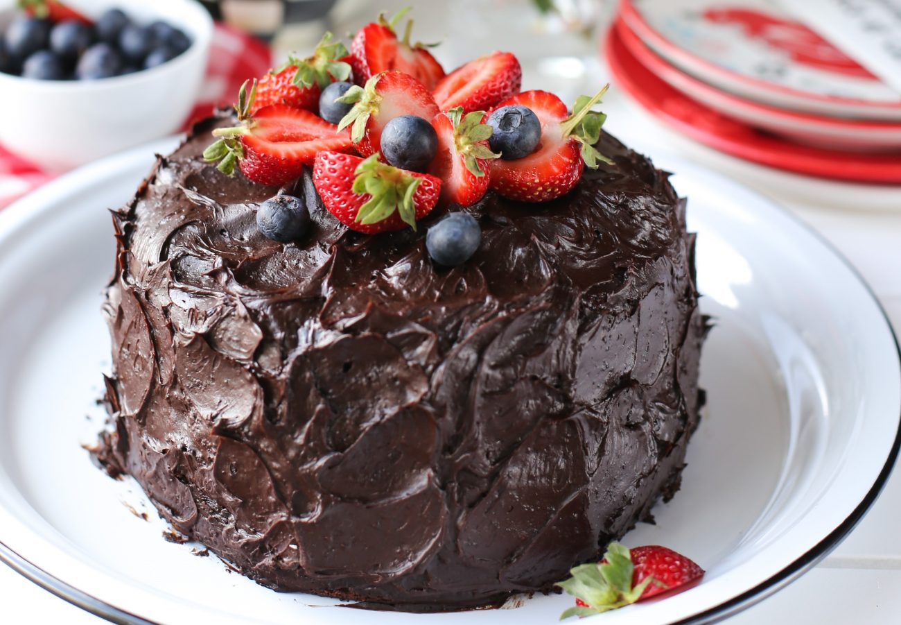

Malzemeler
- 3 adet yumurta
- 1 su bardağı toz şeker
- 1 su bardağı süt
- 1/2 su bardağı sıvı yağ
- 2 yemek kaşığı kakao
- 1 paket kabartma tozu
- 1 paket vanilin
- 2 su bardağı un
- (İsteğe bağlı) 1/2 su bardağı damla çikolata veya 80 g bitter çikolata
Yapılışı
- Fırını 180°C’ye ayarlayın ve ısıtmaya başlayın.
- Yumurta ve şekeri bir kapta beyazlaşıp köpük köpük olana kadar 3–4 dakika çırpın.
- Süt ve sıvı yağı ekleyip karıştırmaya devam edin.
- Kakao, un, kabartma tozu ve vanilini eleyerek karışıma ekleyin.
- Pürüzsüz bir hamur elde edene kadar çırpın (çok çırpmamaya dikkat edin).
- Damla çikolata ekleyecekseniz spatula ile karışıma yavaşça yedirin.
- Yağlanmış kek kalıbına hamuru dökün.
- Önceden ısıtılmış 180°C fırında yaklaşık 35–40 dakika pişirin.
- Kürdan testi yapın: kürdan temiz çıkıyorsa kek pişmiştir.
- Ilındıktan sonra kalıptan çıkarıp servis edin.